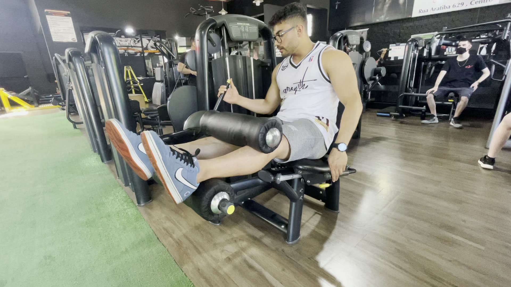
Watch techniqueWger exercise video01 / Hamstrings
Seated leg curl
2 sets10-15 reps75 sec rest
Curl smoothly and squeeze without lifting the hips.
Do not let the stack crash down.
Other options: Lying leg curl · Single-leg curl
ATHLETE 30
Five-day muscle & posture plan
Your training week
Two lower sessions, two complete upper-body exposures and four direct biceps movements. Cricket Sunday, full recovery Monday. Abs stay in your separate morning routine.
86
weekly sets
5
gym days
4
biceps moves
LOWER A
Your heavier lower session: deep squatting, hip hinging and glute strength with four full days before cricket.

Watch techniqueWger exercise video01 / Hamstrings
Curl smoothly and squeeze without lifting the hips.
Do not let the stack crash down.
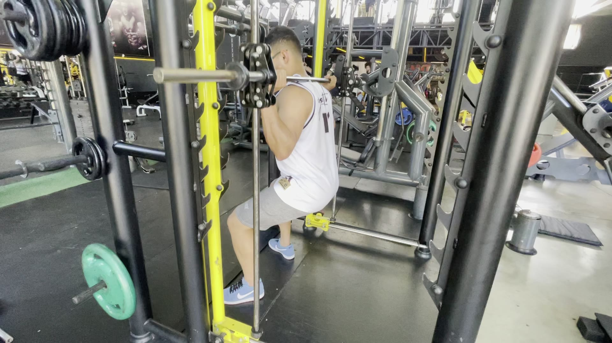
Watch techniqueWger exercise video02 / Quads + glutes
Use the deepest controlled range you can own; brace and drive through mid-foot.
Do not let your knees collapse inward or your pelvis tuck sharply.
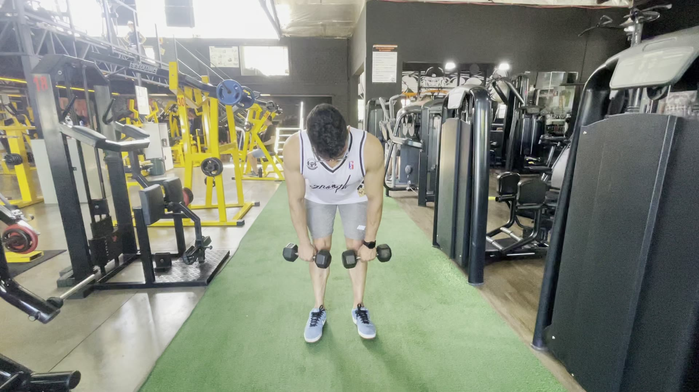
Watch techniqueWger exercise video03 / Hamstrings + glutes
Push your hips back with soft knees and keep the bar close.
Do not chase depth by rounding your back.
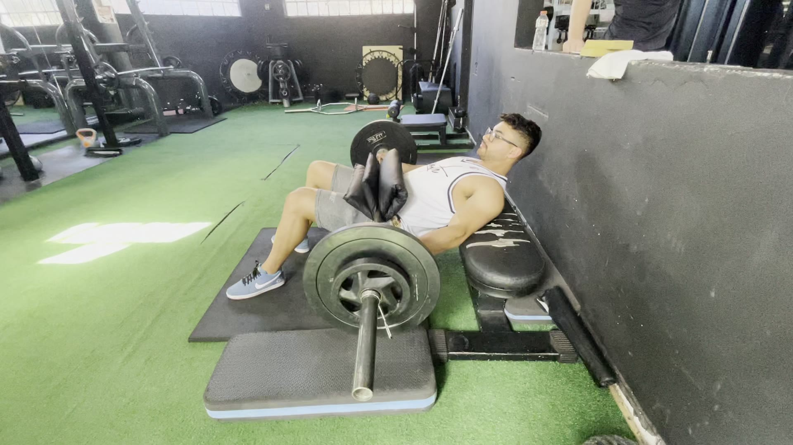
Watch techniqueWger exercise video04 / Glutes
Pause at full hip extension with ribs down and a slight pelvic tuck.
Do not finish by hyperextending your lower back.
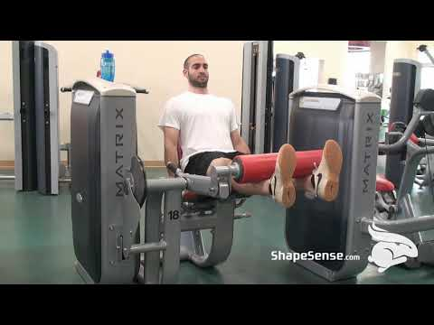
Watch techniqueYouTube exercise video05 / Quads
Align the machine pivot with your knee and extend smoothly.
Do not kick explosively into lockout.
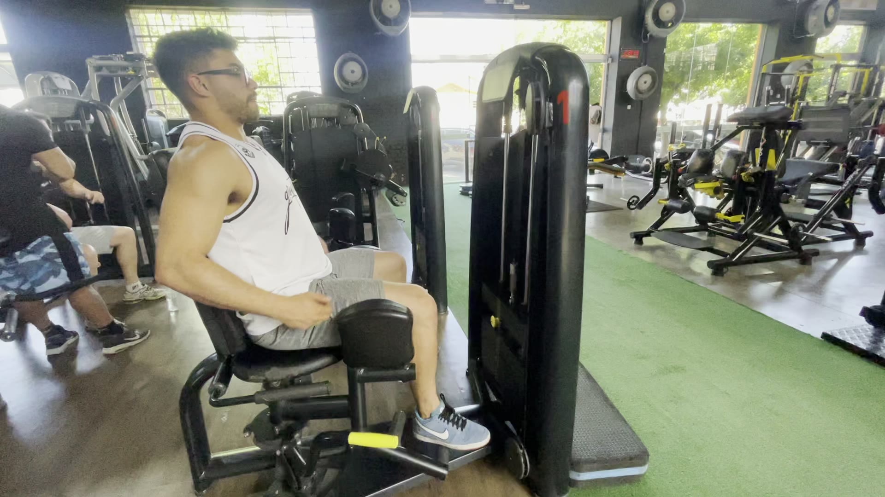
Watch techniqueWger exercise video06 / Inner thighs
Close the legs smoothly and control the return.
Do not force a painful stretch.
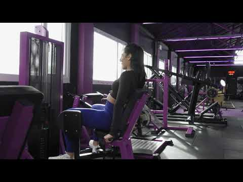
Watch techniqueYouTube exercise video07 / Side glutes
Open from the hips and pause; a slight forward lean may help you feel the glutes.
Do not bounce or lean far back.
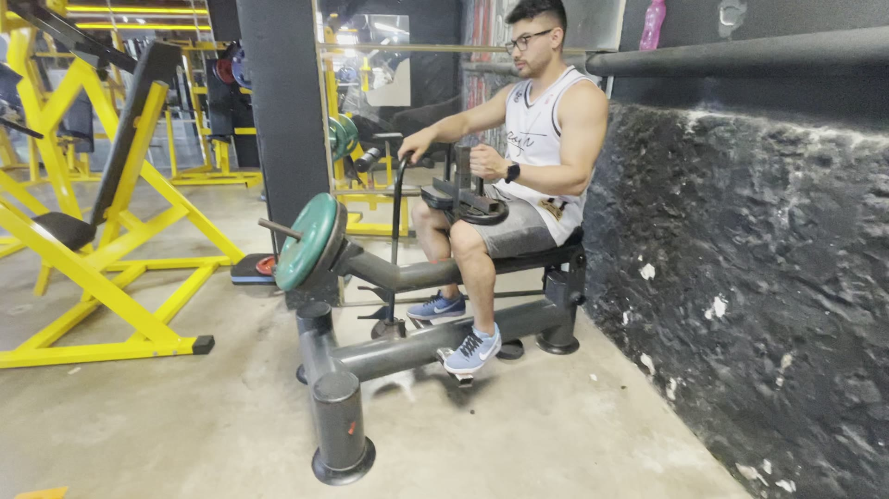
Watch techniqueWger exercise video08 / Calves
Pause in the stretch and rise onto the big toe.
Do not bounce through the bottom.
PUSH
Pressing strength, upper-chest fullness, shoulder width and four direct working sets for triceps.
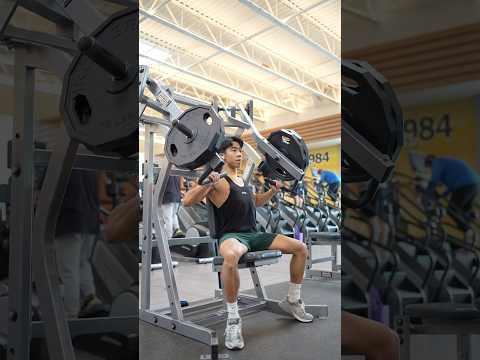
Watch techniqueYouTube form tutorial01 / Upper chest
Set a moderate incline; press up and slightly inward.
Do not flare elbows straight sideways.
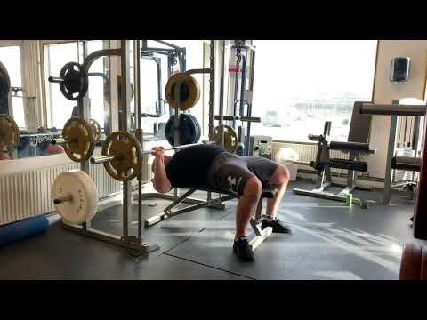
Watch techniqueYouTube form tutorial02 / Chest
Plant your feet and lower the bar toward mid-chest with stacked wrists.
Do not bounce the bar or shorten the bottom range.
 Watch techniqueRoutine video demonstration
Watch techniqueRoutine video demonstration03 / Chest
Bring your upper arms together in a controlled arc while keeping the chest lifted.
Do not force an excessive shoulder stretch.
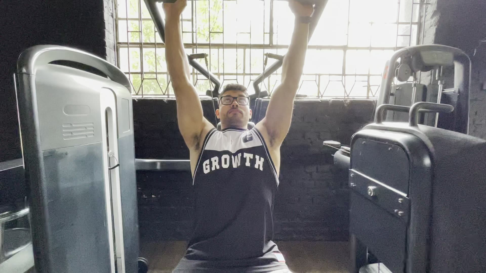
Watch techniqueWger exercise video04 / Front + side delts
Keep ribs stacked and press without craning your neck.
Do not overarch the lower back.
 Watch techniqueRoutine video demonstration
Watch techniqueRoutine video demonstration05 / Side delts
Lead with your elbow and keep the shoulder away from your ear.
Do not shrug the weight upward.
06 / Side delts + lower traps
Raise into a Y with a light load and a long, neutral neck.
Do not turn it into a shrug.
07 / Long-head triceps
Keep upper arms angled forward and extend completely.
Do not flare the elbows aggressively.
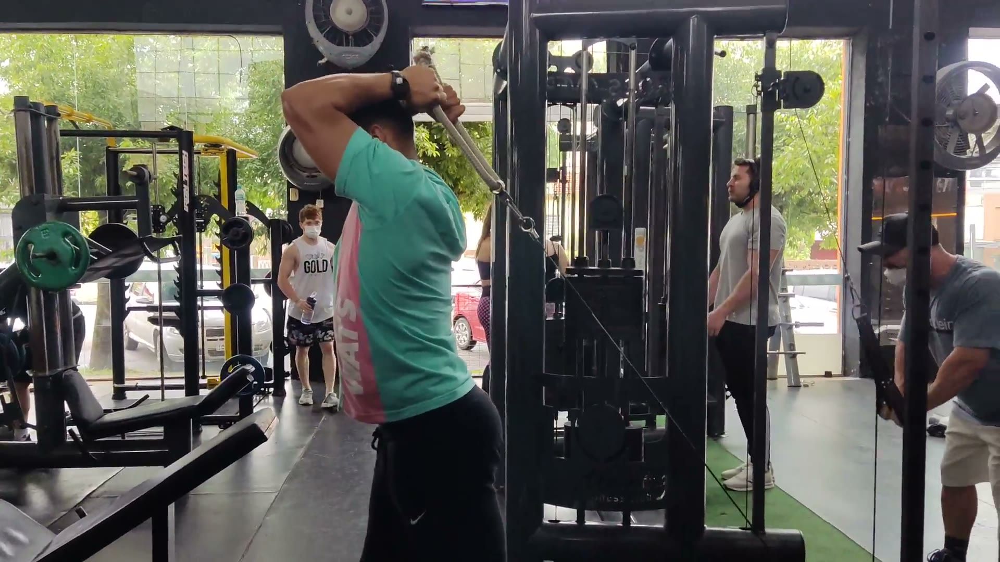
Watch techniqueWger exercise video08 / Triceps
Pin elbows to your sides and fully straighten.
Do not let the shoulders roll forward.
PULL
Your V-taper and posture day, with three rowing grips, direct trap work and two biceps movements.
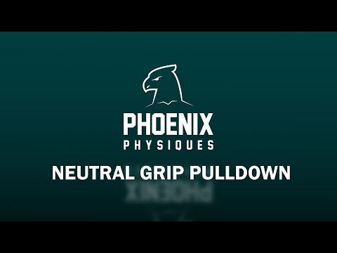
Watch techniqueYouTube form tutorial01 / Lats
Keep your chest tall and drive elbows down toward your ribs.
Do not swing or pull behind your neck.
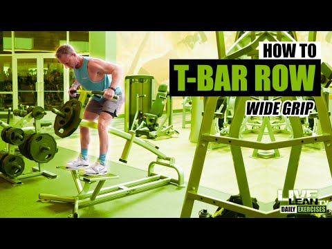
Watch techniqueYouTube form tutorial02 / Upper + mid-back
Let the shoulder blades reach, then row toward the upper ribs.
Do not jut your head forward.
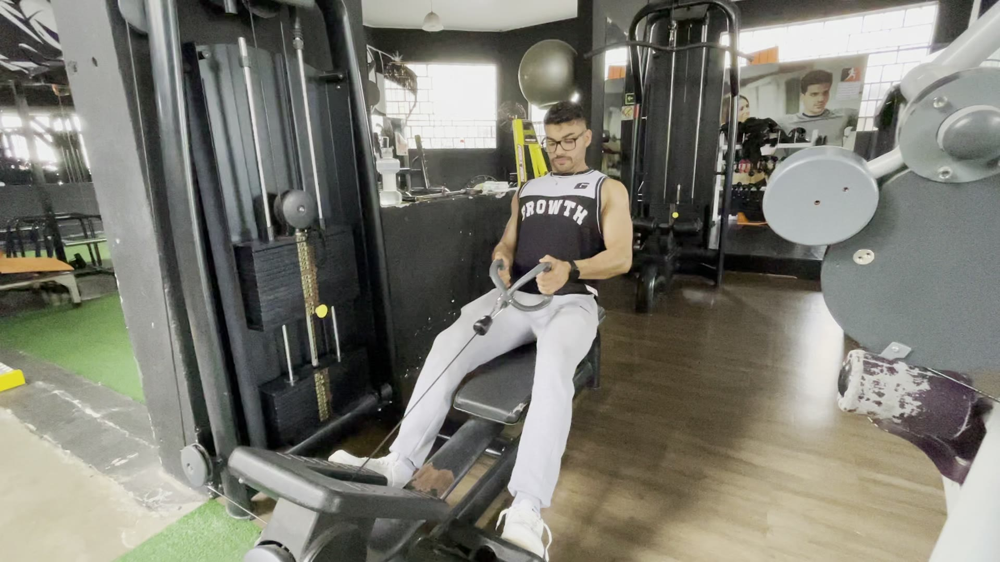
Watch techniqueWger exercise video03 / Mid-back
Pause with the shoulder blades gently together and your neck long.
Do not turn it into a lower-back swing.
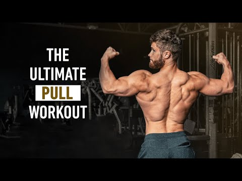
Watch techniqueRoutine video demonstration04 / Lats + mid-back
Keep elbows close and pull toward the lower ribs.
Do not curl the handle with your wrists.
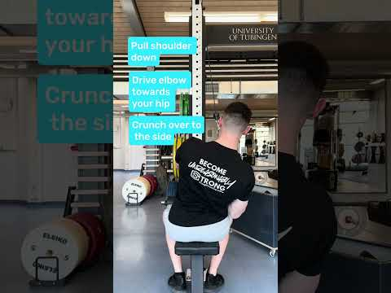
Watch techniqueYouTube form tutorial05 / Lower lats
Reach fully, then pull your elbow toward your back pocket.
Keep the shoulder away from your ear.
06 / Lats
Use the stretched half of the motion while keeping ribs down.
Do not turn it into a triceps extension.
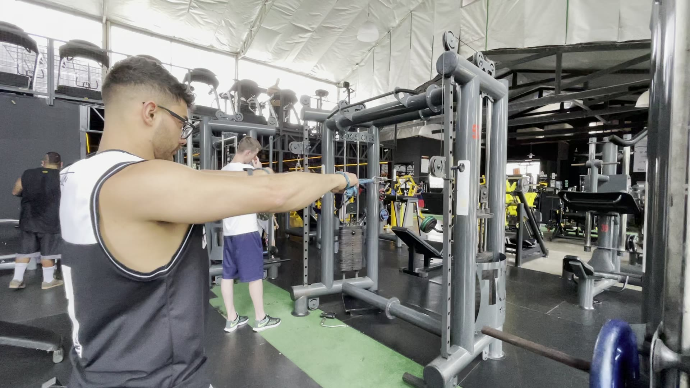
Watch techniqueWger exercise video07 / Rear delts + mid traps
Do one set from each cable height and finish with thumbs behind you.
Do not shrug or overextend your neck.
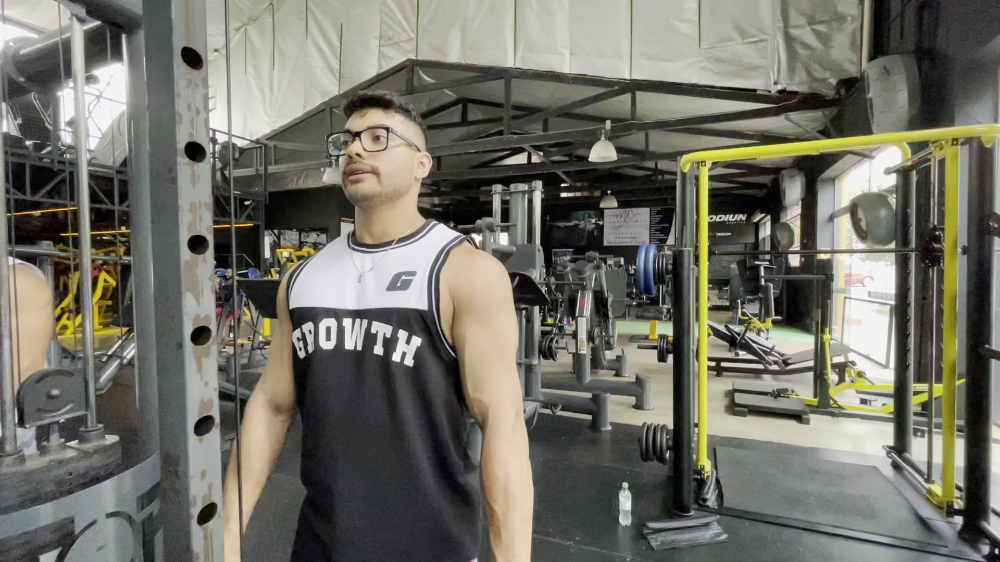
Watch techniqueWger exercise video08 / Upper traps
Lift your shoulders straight up, pause, then lower fully.
Never roll the shoulders in circles.
 Watch techniqueRoutine video demonstration
Watch techniqueRoutine video demonstration09 / Biceps
Keep your upper arms still and control the full lowering phase.
Do not lean backward to move the bar.
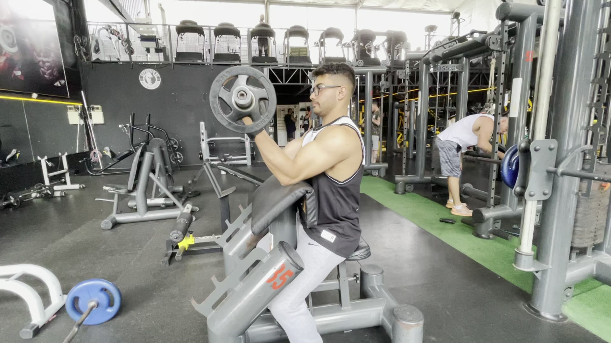
Watch techniqueWger exercise video10 / Biceps
Keep the upper arm supported and lower under control.
Do not hyperextend the elbow at the bottom.
LOWER B
A cricket-friendly lower session: glute priority, moderate loads and every set stopped with about three reps in reserve.
01 / Glutes
Pause at full hip extension with ribs down and a slight pelvic tuck.
Do not finish by hyperextending your lower back.
02 / Glutes + quads
Take a long stride, keep the front heel grounded and push through it.
Do not rush or push off the back foot.
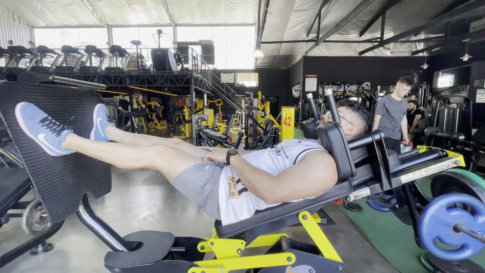
Watch techniqueWger exercise video03 / Quads + glutes
Lower under control while keeping your pelvis and lower back supported.
Do not lock the knees forcefully.
04 / Hamstrings
Curl smoothly and squeeze without lifting the hips.
Do not let the stack crash down.
05 / Quads
Align the machine pivot with your knee and extend smoothly.
Do not kick explosively into lockout.
06 / Side glutes
Open from the hips and pause without bouncing.
Do not lean far back to manufacture range.
07 / Inner thighs
Close the legs smoothly and control the return.
Do not force a painful stretch.
08 / Calves
Pause in the stretch and rise onto the big toe.
Do not bounce through the bottom.
UPPER
A complete upper session for chest, lat width, mid-back, shoulders, traps, triceps and two more biceps movements.
01 / Upper chest
Use a low-to-moderate incline and control the descent.
Do not turn it into a vertical shoulder press.
Watch techniqueRoutine video demonstration02 / Chest
Bring your upper arms together in a controlled arc.
Do not force an excessive shoulder stretch.
03 / Lats
Keep the chest tall and drive elbows down toward your ribs.
Do not swing or jut your head forward.
04 / Upper + mid-back
Row toward the upper ribs and pause without shrugging.
Do not pull the elbows far behind your torso.
Watch techniqueRoutine video demonstration05 / Side delts
Lead with your elbow and keep the shoulder away from your ear.
Do not shrug the weight upward.
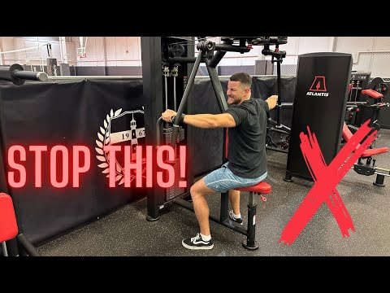
Watch techniqueYouTube form tutorial06 / Rear delts
Reach wide and keep the shoulder blades controlled.
Do not thrust the chest off the pad.
07 / Upper traps
Lift your shoulders straight up, pause, then lower fully.
Never roll the shoulders in circles.
08 / Long-head triceps
Keep upper arms angled forward and extend completely.
Do not flare the elbows aggressively.
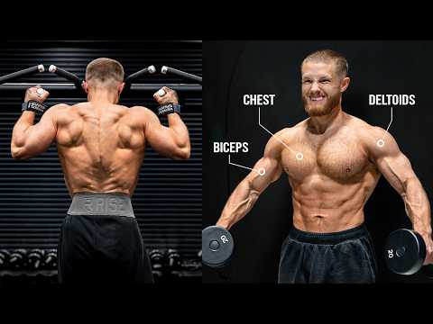
Watch techniqueRoutine video demonstration09 / Biceps
Keep your upper arm behind your torso and curl without moving the shoulder.
Do not step so far forward that the shoulder feels strained.
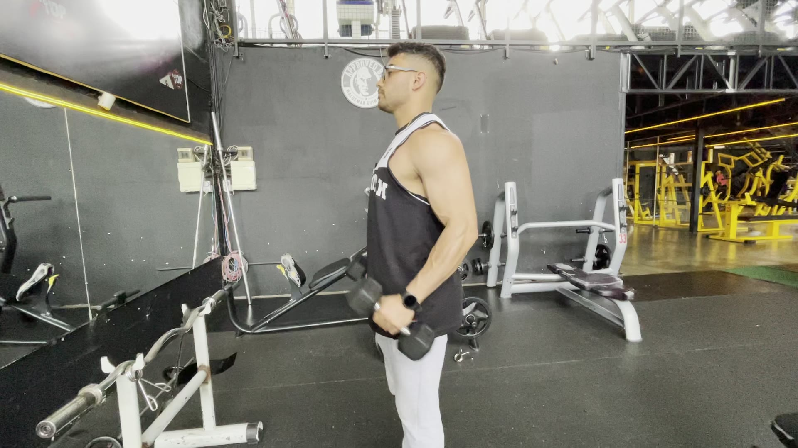
Watch techniqueWger exercise video10 / Biceps + brachialis
Curl across your torso with a neutral grip and control the lowering phase.
Do not throw the dumbbell up with your hips.
THE OTHER TWO DAYS
Two T20 matches are your conditioning. Prioritize carbohydrates, fluids and electrolytes.
Easy walking and gentle mobility are fine. No lifting and no hard running.
Keep your head neutral, stop any movement that increases neck pain, and keep shrugs controlled. Radiating pain, tingling or weakness needs a qualified clinician.
No ab exercises are programmed here because you train them in your morning routine. Keep that work controlled and recoverable.
Tue/Wed/Thu/Sat: finish set one near 2 RIR and set two near 1 RIR. Friday stays near 3 RIR. Add the smallest weight when both sets reach the top of the range cleanly.